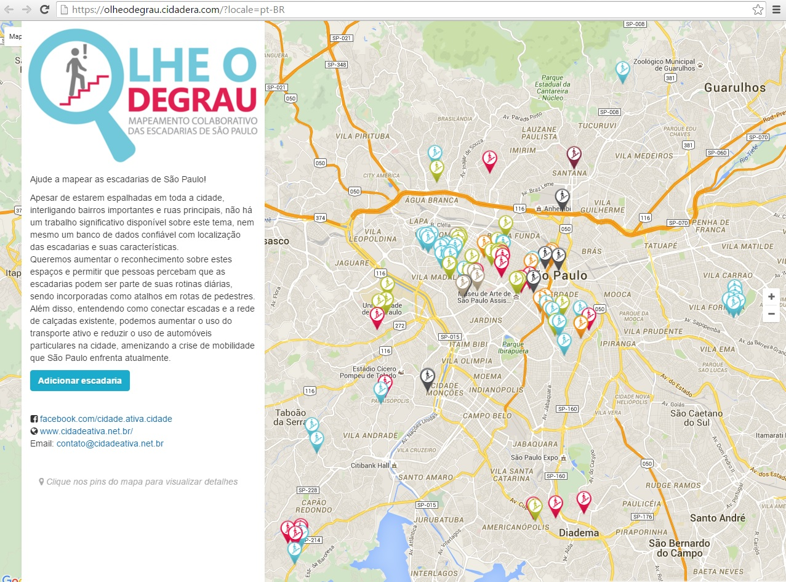

OLHE O DEGRAU
Requalificando escadarias na cidade de São Paulo
Ajude a mapear as escadarias de São Paulo!
Apesar de estarem espalhadas em toda a cidade, interligando bairros importantes e ruas principais, não há um trabalho significativo disponível sobre este tema, nem mesmo um banco de dados confiável com localização das escadarias e suas características.
Queremos aumentar o reconhecimento sobre estes espaços e permitir que pessoas percebam que as escadarias podem ser parte de suas rotinas diárias, sendo incorporadas como atalhos em rotas de pedestres. Além disso, entendendo como conectar escadas e a rede de calçadas existente, podemos aumentar o uso do transporte ativo e reduzir o uso de automóveis particulares na cidade, amenizando a crise de mobilidade que São Paulo enfrenta atualmente.
Com o apoio e incentivo do diretor da E.E. Oscar Pereira Machado, Claudenir Queiroz, a escadaria foi eleita para passar por um processo participativo de requalificação. Os alunos puderam se envolver em todas as atividades propostas. Segundo ele, o escadão é uma extensão da escola devido à sua localização em frente à instituição de ensino. Claudenir também acredita que sua “missão é construir um aluno que seja protagonista da sua própria história e que tenha orgulho da região onde ele reside”.